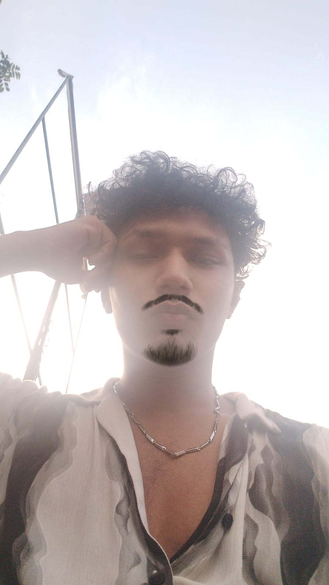

Always moving fast, chasing the perfect line, and turning ideas into reality.
Operating beyond conventional entry points. Merging system automation with real-time performance analytics to engineer precise, efficient software environments.
Identity // Overview
I am a Computer Science student focused on software engineering, systemic automation, and clean execution. Balancing analytical logic with a drive for high-velocity optimization, I approach programming not just as code, but as a mechanism to engineer fast, responsive, and calculated solutions.
